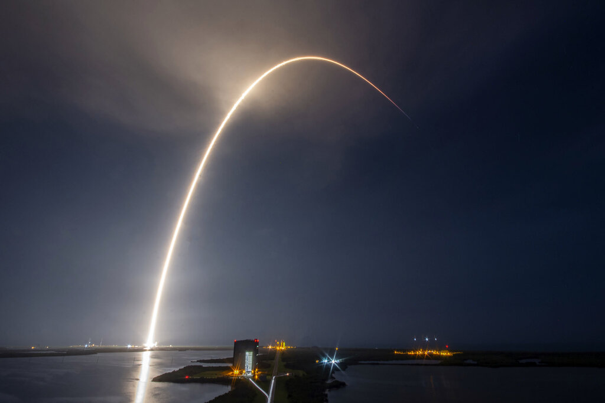

SpaceX also offers commercial flights for private passengers to both earth and Lunar orbit. You can experience Earth´s wonders from space. From the Himalayas and Giza´s Pyramids by day, to the glow of city lights, and the Aurora Borealis by night. Dragon fully orbits the earth every 90 minutes, making a highly customized flight path possible.
Musk founded SpaceX with the goal of launching humans to Mars – something it hopes to achieve with its Starship vehicle it is currently working on, a new spacecraft designed to be the successor to Crew Dragon. SpaceX hopes to fly that vehicle to space with humans later this decade. But proving they can launch humans safely is a crucial first step in that journey. With today’s successful flight, Crew Dragon can begin a new exciting period of commercial spaceflight never seen before. The company also plans, however, to use Crew Dragon to launch paying customers into space. This could include space tourists hoping to visit the space station, or other destinations – such as orbiting space hotels – at a cost of $20 million per seat.
Already several such flights have been announced, with space for up to seven people on each. One rumored customer is Tom Cruise, who Bridenstine said earlier this year had contacted NASA about flying on Crew Dragon to the ISS and shooting a movie there. While Crew Dragon is limited to flying to low Earth orbit, SpaceX is hoping that its Starship vehicle – which will supposedly be able to carry more than 100 people on each flight – can reach more distant destinations. This may include the Moon and Mars. Already NASA has picked Starship, along with two other vehicles, as a potential way for the agency to reach the Moon in 2024 as part of their Artemis program. And Musk has made no secret of his desire to land humans on Mars. SpaceX aim at creating a market for commercial flights, maybe you will be looking at the Earth from space in the nearest future?